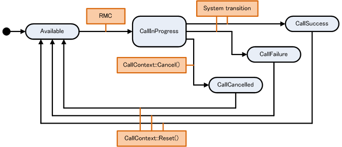

5. NEX Library: General (Dispatching, Asynchronous Processing, Data Integrity)
5.1. Basic Types Defined by NEX
NEX independently defines basic types, such as int, but you can also directly use the basic types defined in the SDK. Table 5.1 shows the correspondence between the basic types defined by NEX and the basic types defined in the SDK.
| Names of Types Defined by NEX | Corresponding Names in SDK |
|---|---|
| nn:: |
bool |
| nn:: |
uint8_ |
| nn:: |
int8_ |
| nn:: |
uint8_ |
| nn:: |
int16_ |
| nn:: |
uint16_ |
| nn:: |
int32_ |
| nn:: |
uint32_ |
| nn:: |
int |
| nn:: |
uint_ |
| nn:: |
float |
| nn:: |
double |
| nn:: |
float |
| nn:: |
int64_ |
| nn:: |
uint64_ |
| nn:: |
char |
| nn:: |
char16_ |
| nn:: |
wchar_ |
| nn:: |
char |
5.2. Overview of Dispatch Processing
NEX performs internal processing, and sends and receives packets by periodically running the Scheduler::Dispatch() function. A Scheduler object is created within the NEX library such as when NEX is initialized due to calling Initialize(), and the object can be obtained with Scheduler::GetInstance(). Call the Scheduler::Dispatch() function periodically while a Scheduler object exists. The Scheduler object is also deleted automatically when NEX terminates, such as by calling functions such as Finalize().
Because CallContext::Wait() calls Scheduler::Dispatch() internally, Scheduler::Dispatch() does not need to be called while CallContext::Wait() is in the process of blocking. When in thread-safe mode, both CallContext::Wait() and Scheduler::Dispatch() may each be called in parallel.
The Scheduler::DispatchAll() member function dispatches all jobs in the dispatch queue for processing. This member function exits when all jobs to dispatch are finished.
On the other hand, Scheduler::Dispatch() can specify a timeout, and processing continues until the timeout period has passed or the dispatch queue is empty. Use the uiDispatchTimeout parameter to specify the timeout in milliseconds. The default value for uiDispatchTimeout is infinite (equivalent to Scheduler::DispatchAll()). Use Scheduler::GetReadyJobsSize() to get the number of jobs that can be run by the Scheduler. When this function is called after Scheduler::Dispatch(), it returns a value of 1 or higher. If the return value is getting larger, the timeout for processing will not be long enough. Either increase the timeout or reduce the amount of data being sent.
NEX automatically performs dispatch processing internally when using Core::ThreadModeInternal or Core::ThreadModeInternalTransportBuffer in thread mode. As a result, calling Scheduler::Dispatch() is not required.
5.2.1. Example of Recommended Usage of Dispatching to Minimize Communication Latency
This section describes the recommended usage of dispatching to minimize communication latency.
- Execute the
Scheduler::DispatchAll()orScheduler::Dispatch()function (assumed for receiving). - The application handles the received data.
- Change the game state (such as physics, AI, and so on).
- Send and receive data.
- Execute the
Scheduler::DispatchAll()orScheduler::Dispatch()function (assumed for sending). - The application performs rendering and other operations.
Make the displatch interval no more than 100 milliseconds. Longer intervals will cause communication delays.
5.3. Asynchronous Processing
To run asynchronous processing with NEX—while communicating with a server, for example—pass a CallContext class or its subclass ProtocolCallContext as the first argument to an asynchronous function. In other words, the functions that take CallContext or its subclasses as the first argument are functions that perform asynchronous processing. CallContext can be used to set the callback function that is called when asynchronous processing is complete, block processes until asynchronous processing is complete, or to get information related to asynchronous processing results. It can also be used to configure cancel and timeout settings. The CallContext class can also be called a calling context.
After asynchronous processing completes, the CallContext state and results will be changed. Use CallContext::GetState() to get the state, and CallContext::GetOutcome() to get the results. The state is represented by the CallContext::State enumerator, and can be one of the following five states: CallContext::Available, CallContext::CallInProgress, CallContext::CallSuccess, CallContext::CallFailure, or CallContext::CallCancelled. The initial state is CallContext::Available. If asynchronous processing is called, the state first transitions to CallContext::CallInProgress and then transitions to either CallContext::CallSuccess, CallContext::CallFailure, or CallContext::CallCancelled. If the calling context is in the CallContext::CallInProgress state, you can use CallContext::Cancel to cancel the calling context. In this case, the state will be CallContext::CallCancelled. If the state is either CallContext::CallSuccess, CallContext::CallFailure, or CallContext::CallCancelled, you can call the CallContext::Reset() function to reset the state to CallContext::Available. When the CallContext::Wait() function is used, thread execution waits until asynchronous processing ends.

Figure 5.1. CallContext State Transition Chart
You can cause a user-defined callback to be invoked at the same time that a CallContext object completes. By using a completion callback, you avoid continuously polling CallContext after asynchronous processing is invoked to determine whether processing has completed. Callback functions can be registered to each CallContext using the CallContext::RegisterCompletionCallbackGeneric() function.
void CallbackFunc(CallContext* pContext)
{
}
void Example()
{
CallContext cc;
cc.RegisterCompletionCallbackGeneric(&CallbackFunc);
SomeAsyncCall(&cc, ...);
}
The first argument of CallContext::RegisterCompletionCallbackGeneric() can be specified as the function pointer, function object, or lambda expression that takes CallContext* as an argument. (The preceding example specifies function pointers.) The pContext that is passed to the callback function as an argument is a pointer to the CallContext object linked to the callback function. The callback function is called from the thread that called the Scheduler::Dispatch() function.
5.3.1. Asynchronous Processing Return Values
Most functions that perform asynchronous processing return a Boolean value. This value indicates whether the asynchronous processing was successfully started. If false is returned, the specified CallContext state is CallContext::CallInProgress, and asynchronous processing cannot be started. This value indicates that it is being used in other asynchronous processing. Because this is a programming error, it causes an assertion failure and halts execution on non-release builds.
Follow the description in the API Reference if the asynchronous processing function does not return bool, or has a special note.
5.3.2. Asynchronous Processing Error Handling
You can get asynchronous processing results with the CallContext::GetOutcome() function. qResult contains two sets of macros: QRESULT_SUCCESS and QRESULT_ERROR, which generate the qResult class that includes the specified return code; and QSUCCESS and QERROR macros, which represent the return code itself. In addition to using qResult::GetReturnCode() to get the return code and compare it to the return code generated by the QERROR macro, an operator for comparing return codes is defined for qResult so you can compare them directly. While you can compare the qResult object to the qResult object generated by the QRESULT_ERROR macro, processing is faster when comparing the return codes generated by the QSUCCESS and QERROR macros.
If the error is on the list of errors for the application to handle, use the application to perform the appropriate error handling. For more information, see the API Reference, or the sections on error handling for the various features.
When an unlisted error occurs, use the qResult::GetNnResult() function to get nn::Result, or qResult::GetErrorCodeStruct() to get the error code, and perform any communication termination processes after passing the result to the error viewer applet (see Code 5.2).
5.3.3. Common Errors
The following section describes common errors that occur for all APIs.
You can select whether to have the application handle the following errors or pass the error to the error viewer applet.
| Error | Conditions for Occurrence, Status, etc. |
|---|---|
| QERROR(Core, OperationAborted) | Asynchronous processing was interrupted by a logout. |
| QERROR(RendezVous, ConnectionDisconnected) | Asynchronous processing was interrupted by disconnecting from the game server. |
| QERROR(RendezVous, ConnectionDisconnectedForConcurrentLogin) | Disconnected from the game server due to the same account logging in from a different device, which caused the asynchronous processing to be interrupted. |
| QERROR(Transport, Unknown) | A network error occurred for which NEX itself cannot determine the cause, such as disconnecting from the wireless LAN, causing asynchronous processing to fail. |
For the following errors, as with unlisted errors, use the qResult::GetNnResult() function to get nn::Result, or qResult::GetErrorCodeStruct to get the error code, and perform any communication termination processes after passing the result to the error viewer applet (see Code 5.2).
| Error | Conditions for Occurrence, Status, etc. |
|---|---|
| QERROR(PythonCore, Exception) | An unexpected error occurred with the server. Contact Nintendo Support. |
| QERROR(RendezVous, LimitExceeded) | Generated if the number of function access attempts is much higher than the maximum number established by the guidelines, or if the total number of calls per unit time is high. Also generated even when the user seeking matchmaking already own 20 matchmaking sessions. Review your programming. This problem does not occur on a production server. Do not restrict API calls based on an assumption that this error will be returned. |
5.3.4. Errors for the Application to Handle
- Common
QERROR(Core, Cancelled): Asynchronous processing was canceled.
- Matchmaking
QERROR(RendezVous, SessionVoid)The gathering does not exist.QERROR(RendezVous, SessionFull)The maximum number of participants has already been reached.QERROR(RendezVous, PersistentGatheringCreationMax)The registration limit for the persistent gathering has been exceeded.QERROR(RendezVous, PersistentGatheringParticipationMax)The limit on persistent gathering participants has been exceeded.QERROR(RendezVous, InvalidGatheringPassword)The password does not match the persistent gathering password.QERROR(RendezVous, WithoutParticipationPeriod)The session is not within the available participation period.QERROR(RendezVous, DeniedByParticipants)Matchmaking session participants have the local station registered on their block list.QERROR(RendezVous, ParticipantInBlockList)A participant in the matchmaking session is registered in the local block list.QERROR(RendezVous, NotParticipatedGathering)The specified user has not joined the gathering.QERROR(RendezVous, MatchmakeSessionUserPasswordUnmatch)The matchmaking session user password does not match.QERROR(RendezVous, MatchmakeSessionSystemPasswordUnmatch)The matchmaking session system password does not match.QERROR(RendezVous, UserIsOffline)The specified user is offline.QERROR(RendezVous, NotFriend)The specified user is not a friend.QERROR(RendezVous, SessionClosed)The gathering is closed.QERROR(MatchmakeReferee, InvalidArgument)An argument is invalid.QERROR(MatchmakeReferee, AlreadyExists)Personal statistics already exist.QERROR(MatchmakeReferee, NotParticipatedGathering)Not a participant in the gathering.QERROR(MatchmakeReferee, NotParticipatedRound)Not a participant in the round.QERROR(MatchmakeReferee, StatsNotFound)Statistical data was not found.QERROR(MatchmakeReferee, RoundNotFound)The round was not found.QERROR(MatchmakeReferee, RoundArbitrated)The round has been summarized.QERROR(MatchmakeReferee, RoundNotArbitrated)The round has not been summarized.
You can choose to either handle the following error messages in the application or pass them to the error viewer applet.
QERROR(RendezVous, GameServerMaintenance)Game server maintenance will begin.QERROR(RendezVous, InvalidOperation)Attempted an invalid operation.QERROR(RendezVous, AlreadyParticipatedGathering)Already joined the gathering.QERROR(RendezVous, PermissionDenied)Attempted an operation without having the permission to do so.
- Ranking
QERROR(Ranking, NotFound)Data not found.
- Ranking2
QERROR(Ranking2, InvalidScore)An invalid score was uploaded.
- DataStore
QERROR(DataStore, NotFound)Data not found in specified data ID or persistence slot.QERROR(DataStore, PermissionDenied)Attempted operation without password on data to which user does not have privilege.QERROR(DataStore, UnderReviewing)Access denied because data is under review.QERROR(DataStore, InvalidPassword)Attempted operation with incorrect password.QERROR(DataStore, ValueNotEqual)Could not update because values are not equal.
- Matchmaking Voice Chat
QERROR(SmartDeviceVoiceChat, UserNotFound): A user who has not logged in to Nintendo Switch Online attempted to use Matchmaking Voice Chat.QERROR(SmartDeviceVoiceChat, NetworkServiceLicenseRequired): The voice chat server detected that online play rights expired.QERROR(SmartDeviceVoiceChat, AccountLibraryError): The account library API returned an error during SmartDeviceVoiceChatClient processing.
You can select whether to have the application handle the following errors or pass them to the error viewer applet.
QERROR(SmartDeviceVoiceChat, UnderMaintenance): The voice chat server is undergoing maintenance.QERROR(SmartDeviceVoiceChat, ServiceNoLongerAvailable): The voice chat service has ended.
MatchmakeExtensionClient client;
ProtocolCallContext context;
// Call asynchronous processing.
client.JoinMatchmakeSession(&context, gid, NEX_T("join message"));
// Block and wait for asynchronous processing to complete.
context.Wait();
if(context.GetState() != CallContext::CallSuccess)
{
qResult result = context.GetOutcome();
// Errors that must be handled by the application.
switch (result.GetReturnCode())
{
case QERROR(RendezVous, SessionVoid):
// There is no matchmaking session.
break;
case QERROR(RendezVous, SessionFull):
// The matchmaking session is full.
break;
default:
{
// Use error display for other unexpected errors that do not need to be handled by the application.
nn::err::ErrorCode errorCode = result.GetErrorCodeStruct();
// Start the error viewer applet.
nn::err::ShowError(errorCode);
// Log out and shut down.
}
}
}
5.4. Cautions for Processing in Callbacks
Callbacks are called in a locked system state by using Scheduler::SystemLock(). Do not, however, call any of the following from within a callback: Scheduler::Dispatch(), Scheduler::DispatchAll(), or CallContext::Wait().
5.5. Socket Port Numbers Used With NEX
NEX uses HTTPS for communication with the server. When configuring a router or firewall, enable communications to any server on TCP port 443.
Also use UDP for direct communication between terminals (real-time communication feature). Use an environment that enables receiving and sending on all UDP ports.
5.6. NEX Communications: Data Integrity
The NEX client uses HTTPS for communication with servers. If data tampering occurs over the communication channel, errors occur in the HTTPS send-receive processing and the function returns an error. There is no need for concern about packet tampering over communication channels in the application itself.
For direct communication between terminals (real-time communication feature), hash values are used to detect tampering with the communication data. If received data has unexpected hash values, those packets are destroyed in the library, behavior on the communication channels remains the same, with the invalid packets being dropped without being passed to the application. You do not need to worry about packet tampering over communication channels in the application itself.
5.7. Uniqueness of NEX Server Services IDs
The IDs issued by NEX server services (NEX unique ID, session ID, gathering ID, data ID, and so on) are not unique across game servers. These IDs can be duplicated if the server environment or game server ID is different. For example, the same NEX unique ID that was issued in the development environment might also exist in the Lotcheck environment. If you are using an independent server, do not design it on the assumption that these IDs are unique.
The gathering IDs are assigned starting from 0 and a different value is assigned each time a matchmaking session, persistent gathering, or official persistent gathering is created. Matchmaking sessions and persistent gatherings will never have the same gathering ID even though they are different types of gatherings.
In general, the gathering ID increments monotonically. However, there are exceptions where the value might be reset. Do not implement your application expecting the value to increment monotonically.